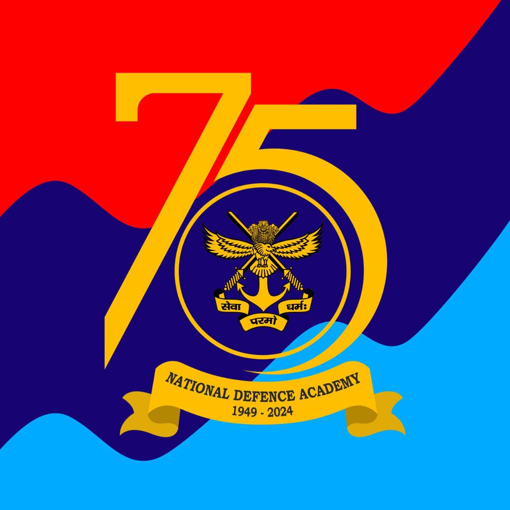

(N.D.A)
|  |
Message From The Commandant:-The National Defence Academy is an iconic institution and hallmark of global excellence in the sphere of military education. Over the years it has emerged as a unique Tri-Services military academy, attracting the best of youth from our nation and also from friendly foreign countries and transforming them into officers and gentlemen. During the last seven decades of its glorious existence, the National Defence Academy has grown both in grace and grandeur and from its portals have emerged ‘Leaders of Men’, who have demonstrated the essence of inter-services camaraderie and jointmanship thereby upholding the faith and vision of its founding fathers. Apart from leaders of men, the alumni have proved to be great mountaineers, cosmonauts, sportsmen, researchers, creative writers, artists, corporate honchos and more recently, Olympic champions. Their achievements are all pervading and showcased in every echelon of our Armed Forces and also in the civil society. The ‘Cradle’ has indeed rocked the nascent youth and groomed them into ‘Leaders’ who have lived up to its ethos: ‘सेवा परमो धर्म:’ (Service Before Self). The objective of training, in essence, is to impart academic and technological knowledge of the highest quality in order to equip cadets with appropriate qualification as foundation for their service careers. The cadets undergo three years of rigorous military training to achieve the requisite physical and endurance standards, with proficiency in troop games. The qualities of leadership, a desire for self improvement and a drive to excel in every sphere of life are instilled in every cadet. Emphasis on overall personality development of a cadet is laid by inculcating a sense of self-discipline, honour, integrity, duty, camaraderie, jointness of services and sense of pride. The endeavour at the Academy has been to continuously evolve the training methodologies and infrastructure with a view to provide training conforming to standards laid down by the COSC. With the synergetic and collective efforts of NDA staff from three services and civilian officers, the Academy has been steadfast in fulfilling this onerous task. We look forward to girl cadets joining this academy in June 2022. Vice Admiral Ajay Kochhar, AVSM, NM |